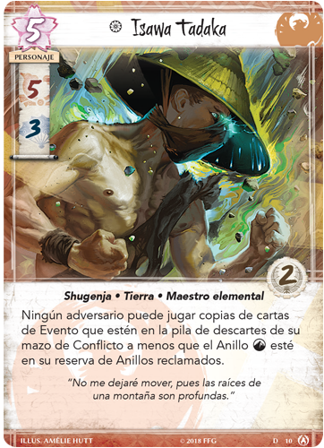
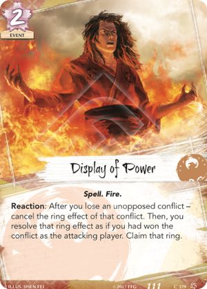

Los aliados del Fénix
Dado el coste de los personajes con gloria alta, es vital escoger a los aliados adecuados. Al considerar las opciones, destacan León, Dragón y Unicornio. Con León consigues Servicio de guardia para honrar a los defensores, Vengador juramentado para combinarlo con Demostración de poder, y Mantener la posición para mantener en juego a los personajes honrados. El Clan Dragón ofrece más control de la mesa. Incluye Renuncia a lo material ya que Nublar la mente es poderoso contra el Fénix, y se puede combinar con La furia de Mirumoto y Voluntad indómita para controlar los conflictos que se declaren.
Sin embargo, el Clan Unicornio puede que sea la mejor opción. Catalejo te permite robar cartas, Buscador de caminos Iuchi puede encontrar la provincia más adecuada para atacar y el Talismán del Sol puede dirigir los ataques del contrario. Y, si tienes sitio, Costumbres gaijin puede ser de mucha ayuda en el momento adecuado. Con el Unicornio pierdes un poco de control sobre los personajes a cambio de ventaja de cartas. Cualquiera de estos aliados ofrece buenas opciones para conseguir la victoria. Pero no importa los aliados que escojas, el camino hacia la victoria empieza en las provincias.

Isawa Tadaka
"Ningún adversario puede jugar copias de cartas de Evento que estén en la pila de descartes de su Mazo de Conflicto a menos que el Anillo Tierra esté en su reserva de Anillos reclamados"
Isawa Tadaka es la única carta fénix en la Restricted List. Con su coste de cinco puntos de destino, Isawa Tadaka se alza como un ejemplo de poder en el Clan Fénix, junto a Shiba Tsukune e Isawa Kaede. Su habilidad militar de cinco le convierten en una rareza militar en un clan normalmente pacifista, y también se defiende en los conflictos políticos. Sus dos puntos de gloria suponen una amenaza si llega a ser honrado, y es capaz de mantener algo de su habilidad en caso de ser deshonrado.
Mientras Isawa Tadaka está en juego, los adversarios no pueden jugar copias de cartas de Evento que estén en la pila de descartes de su mazo de conflicto, a menos que el anillo de tierra esté en su reserva de anillos reclamados. Esta capacidad puede ser sofocante por distintos motivos.
En primer lugar, esta capacidad no se limita a los conflictos en los que participa Isawa Tadaka. Mientras esté en juego, los adversarios que no tengan reclamado el anillo de tierra tienen restringidos los eventos que pueden jugar. Es más, tendrán que pensar con cuidado la elección de anillo. Es posible que el anillo de tierra no sea su elección óptima, pero deben pensar si reclamarlo para poder evitar el poder de Isawa Tadaka. Lo mejor de todo, si consigues reclamar el anillo de tierra durante un conflicto, al adversario no le queda más remedio que capitular ante el maestro de la tierra.

Demostración de Poder
"Reacción: después de que pierdas un Conflicto sin oposición - anula el efecto del anillo de ese Conflicto. Luego tú resuelves el efecto de ese Anillo como si tu hubieras ganado el Conflicto como jugador atacante. Reclama ese Anillo"
Demostración de Poder es una de las herramientas del clan fénix más frustante para nuestros rivales. Nos permite mantener a nuestros personajes fuera de los conflictos mientras que mantienen sujeto a nuestro adversario y preguntándose si debería declarar un conflicto. No obstante, es una herramienta a utilizar con cautela, debido a los peligros de permitir al adversario ganar un conflicto sin oposición.
Si Demostración de Poder es contrarrestada, nos deja en una posición muy precaria, habiendo perdido un conflicto y un anillo que el enemigo puede haber convertido facilmente en la ruptura de una provincia. Debemos por tanto jugar alrededor de las opciones que tiene el rival de cancelar el hechizo
Afortunadamente para nosotros, solo hay hasta la fecha tres cartas que pueden cancelarlo, "Censura", "La voz del honor" y "Decreto Falsificado". Para evitar "Censura", debemos tener cuidado durante las rondas en las que el rival posea el favor imperial, y procurar conseguirlo para nosotros. "La voz del honor" nos obliga a considerar que personajes podría honrar con facilidad el rival. "Decreto Falsificado" es la que nos pone más dificil jugar a su alrededor, ya que solo necesita un cortesano sin deshonrar, pero forma parte de la RL, así que solo esperamos verla en escorpión.